As the process of optimising a model for the xcore applies a quantisation and changes the operators used, it is important to measure the precision of this optimised model to ensure it still meets the required precision.
This document will discuss a method for measuring this precision, and comparing it to that of equivalent tensorflow and tensorflow lite models. For comparison the model used is a MobileNetV1 model with an Alpha parameter of 0.25, and an input image dimensionality of 224 x 224 x 3.
The precision of an xcore model is calculated by comparing the results it produces to that of the equivalent tensorflow and tensorflow lite models. This is done for every layer in a given model. This process is detailed below.
The first step is to produce a tensorflow base model from Keras. This model will be the model that the tflite and xcore models are derived from, and will act as a precision baseline for comparison.
In this case a MobileNetV1 model with an Alpha of 0.25 and a 224x224x3 input image resolution was generated. Any model that is trained with imagenet weights can be generated here.
The next step is to seperate the tensorflow model up into it's different layers and create a tensorflow model for each layer. Some layers such as relus, batch norms, and dropouts are combined with the convolution layer before them as this is really part of running the convolution and do not make sense on their own.
Keras has built in functionality for converting Keras tensorflow models into tensorflow lite models. This process however requires a representative dataset to be generated for each model.
As the model in question is trained with imagenet weights, imagenet_v2 images are loaded from tensorflow datasets and are used to form a representative dataset for the input layer (layer 0). In this case a sample of 500 images from imagenet_v2 was used.
A representative dataset is then generated for each subsequent layer. This is done by using a model made up of the first layer, and every layer up to the target layer combined. This model is then used to generate predictions for each image in the original representative dataset, to create a representative dataset of size 500 for each layer.
Once each layer has an associated representative datasset, it can be converted to a tensorflow lite model. This is an intermediary step to converting to an xcore model, and can be used as a precision comparison.
Finally for each layer, the tensorflow lite model associated can be converted into an xcore optimised model using the xcore-opt command line tool.
This stage involves using the representative dataset from each layer, and running each image through three models associated with that layer to generate 3x500 outputs. This is done so that we have a large sample of outputs from each model so that the models can be compared more effecively.
In order to compare the three models, a number of metrics are calculated. These are calculated between tensorflow and tflite, tensorflow and xcore, and tflite and xcore models. The metrics calculated are:
For this comparison, the results of the tensorflow model are quantised so that they can be directly compared with the outputs of the two quantised models. This quantisation has a range between (-128, 127) for any value.
For each error, the first graph contains the metric for tensorflow and tensorflow lite, plotted along with that for tensorflow and xcore. The second plot displays the metric for tensorflow lite and xcore.
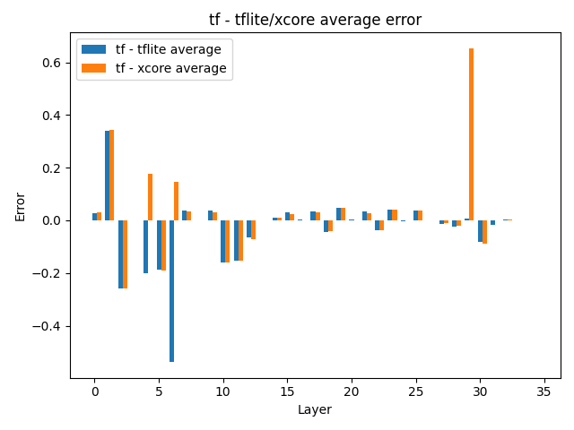 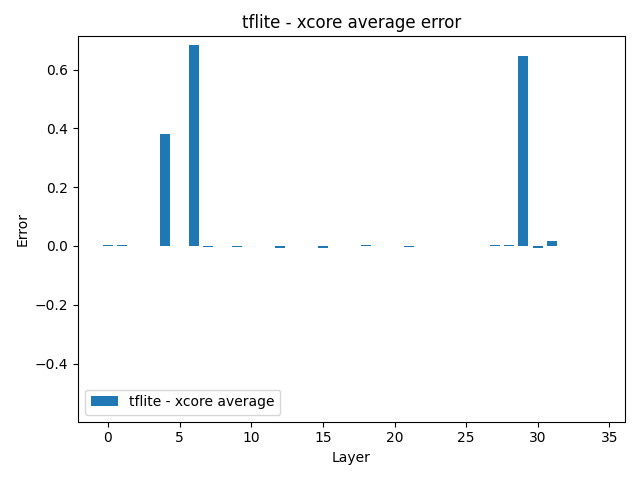
In terms of average error, for most layers in this model the quantised models are very similar to the tensorflow model. The error is slightly higher in layers at the start, and the xcore model has a large error in layer 29.
More interestingly, the xcore and tflite models are almost identical in this metric, other than in layers 4, 6, and 29 where there are large divergences.
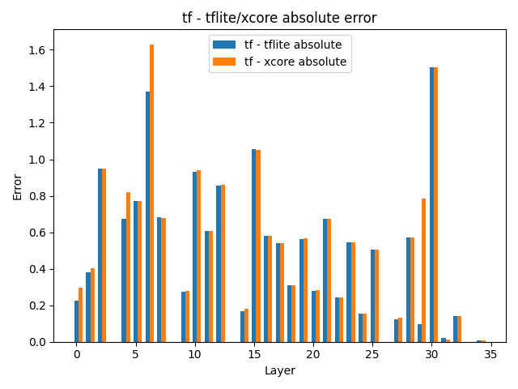 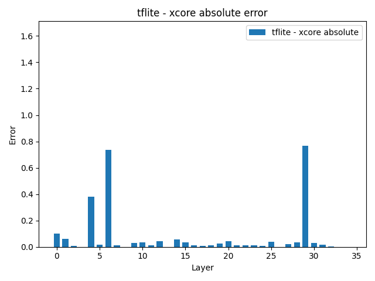
With the Average Absolute Error, we see a higher error in a lot of the layers for the tensorflow comparison, as these errors would have been hidden postive and negative errors for the previous metric. The tflite and xcore comparisons with tensorflow here are very simlar, with some variation around the problem layers identified in the Average Error.
The tflite vs xcore comparison shows a similar pattern to Average Error, with spikes in the same layers, and a higher baseline error throughout.
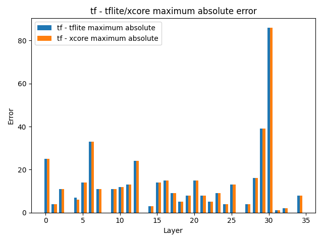 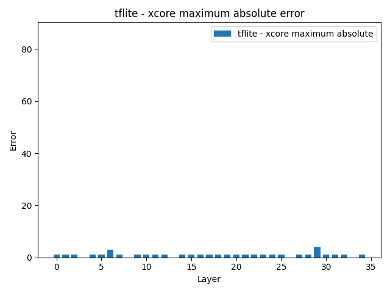
The Maximum Absolute Error can bring attention to any large element specific errors that are masked by averages. Here we see that compared to tensorflow, the tflite and xcore models have idential Max Absolute Error, except for a small difference in layer 4. Overall these quantised models have significant Max Errors for each layer, with a big error in layer 30.
When comparing the two quantised models directly, we see that for most layers the Maximum Absolute Error is great with values of 0 or 1. There are 2 layers that have higher errors however, in layers 6 and 29.
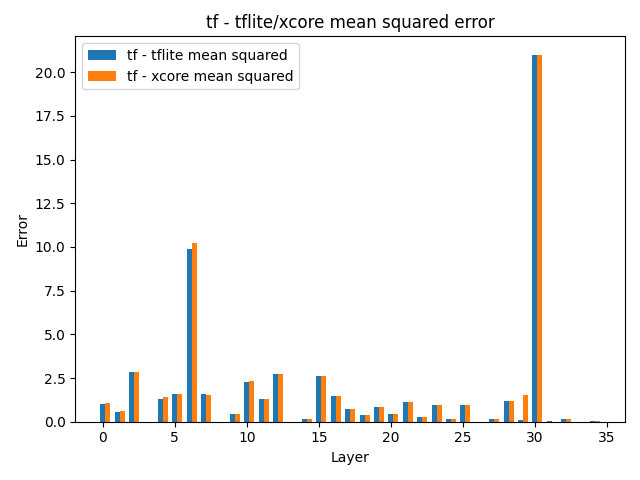 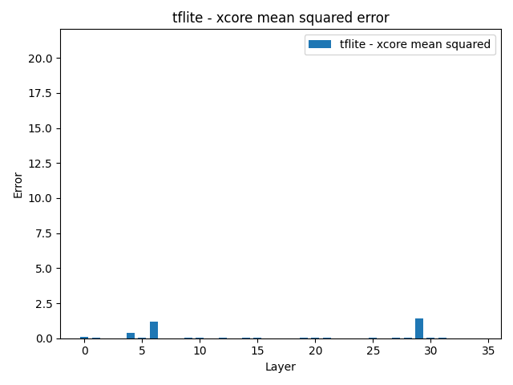
The Mean Squared Error gives us similar results as shown by the Average Absolute Error. It will suppress the layers with smaller errors, and accentuates the spikes we saw. When comparing tensorflow to the quantised models, this makes the errors in layers 6 and 30 stand out. And in the tflite vs xcore graph the differences in layers 4, 6 and 29 are amplified.
There are a large number of histograms produced, as 3 are created per layer. One for tf - tflite average error, one for tf - xcore, and one for tflite - xcore. These histograms take all the individual output errors from a layer and place them in bins of size 0.2 between -2.1 and 2.1. The frequency for each bin is plotted as a histogram.
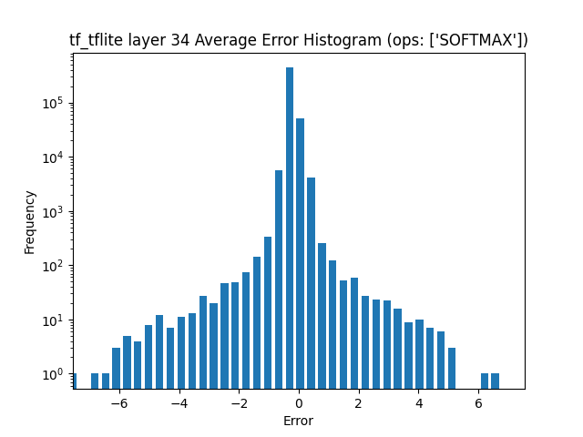 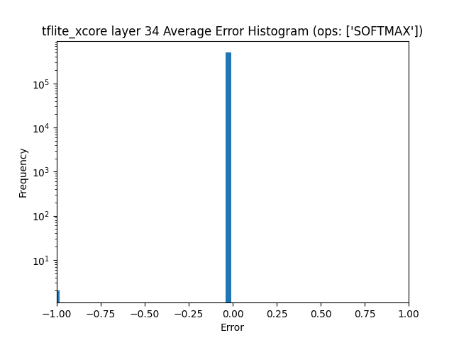
As there are so many histograms, the final layer will be focused on. In the first two histograms, displaying errors between the tensorflow model and the quantised models, the distribution of errors is almost identical. With a large number of errors around zero, and lots of errors at plus and minus 1. There is also a cluster of errors in the -2 region. The tflite - xcore histogram however shows very few large errors, with most elements having an error inthe -0.1 - 0.1 region, with a small number of errors around the -1 region.
If we then plot the histograms of the layers that displayed higher errors in earlier graphs, 4, 6, and 29.
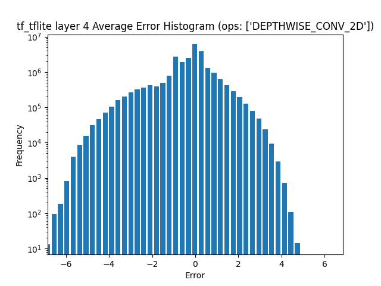 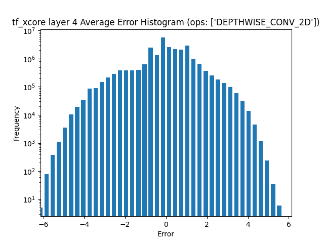 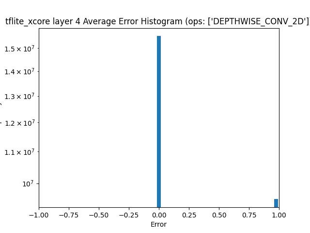
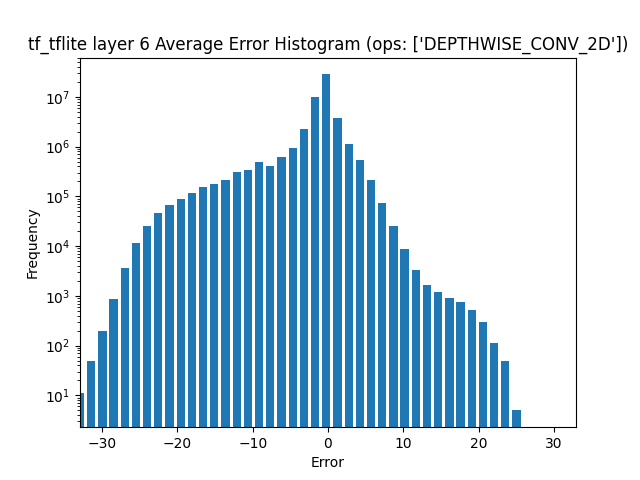 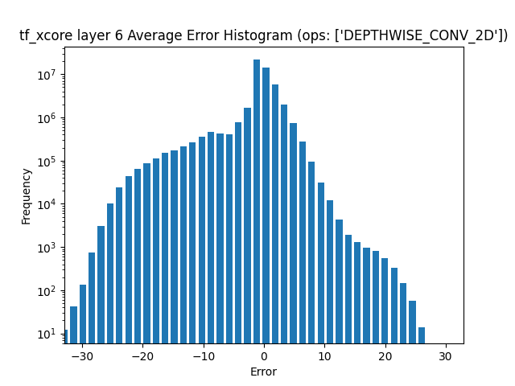 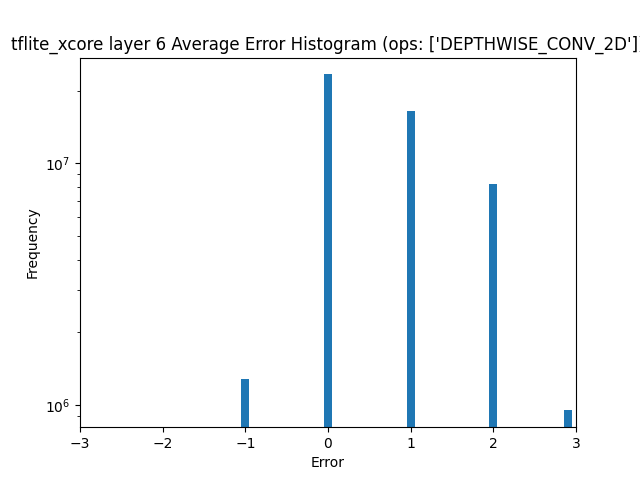
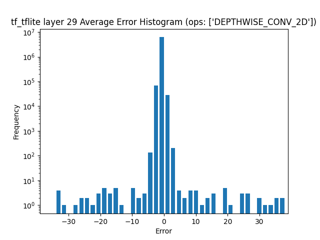 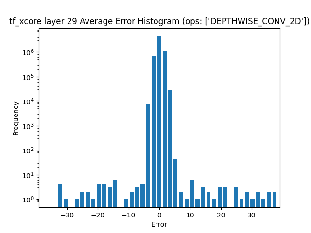 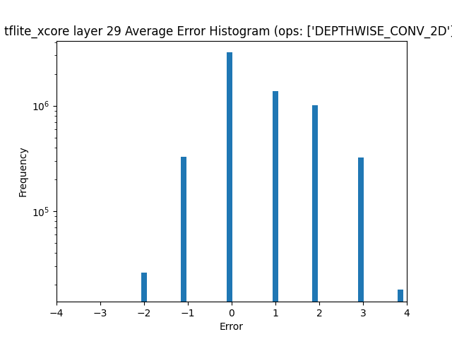